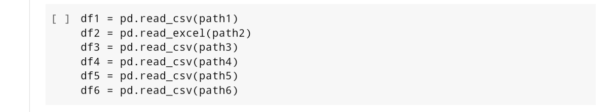
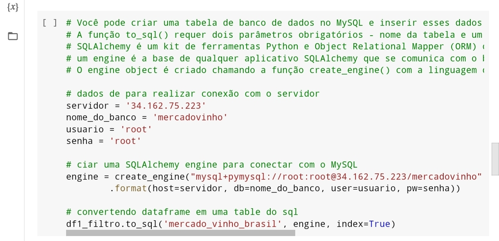
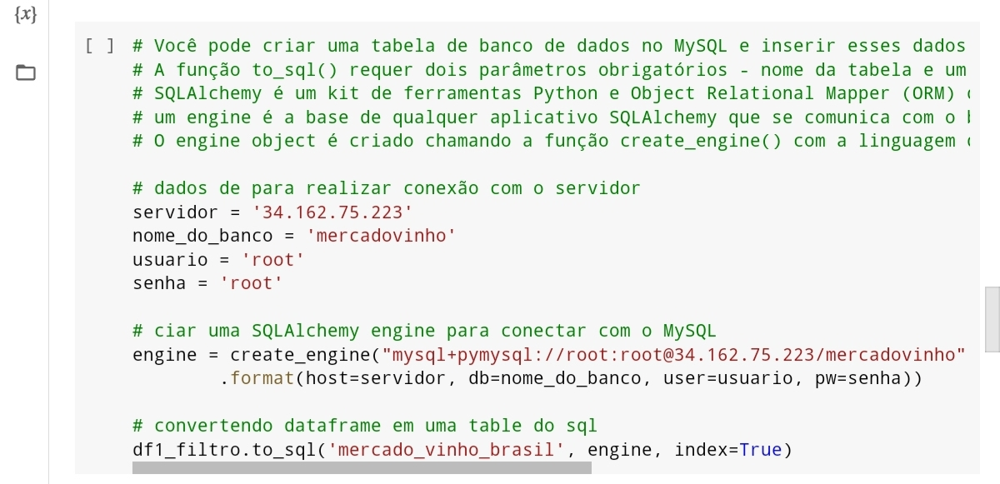

TVLLE - A Solução Certa para Investir o Seu Dinheiro!
Mercado de Bebidas à cerca do Vinho Nacional e Mundial
Tema: Mercado de bebidas
Este projeto foi desenvolvido por:
Emanuela Caetano - Contato LinkedIn
Leonardo Fabricio - Contato LinkedIn
Lucas Alcântara - Contato LinkedIn
Talytta - Contato LinkedIn
Vitor - Contato LinkedIn
Este projeto foi desenvolvido com dados públicos disponibilizados na internet, para saber as fontes clik aqui.
O trabalho em questão foi desenvolvido como projeto final do curso de Engenharia de Dados da Soul Code Academy com carga horária de 750 horas, ademais, requisito obrigatório para a conclusão.
confira o código na integra aqui!
Quem Somos?
somos a TVLLE uma empresa de consultoria, que auxilia na criação e investimentos de nossos parceiros através de seus dados
o mercado de vinhos é um grande movimentador de economias, As importações saltaram de 120 mil toneladas, com valor total de US$ 372 milhões em 2019, para 160 mil toneladas e US$ 478 milhões em 2021, de acordo com informações do Ministério da Agricultura, Pecuária e Abastecimento (Mapa). Dessa forma a TVLLE levantou dados para avalição desse segmento de mercado para explorar seu dinamismo, crescimento e possibilidades de investimento.
Para poder disponibilizar tanto os arquivos brutos e após o tratamento, foi necessário realizar o download de bibliotecas que não são nativas do Colab
importação de mais algumas bibliotecas
E por fim mais uma instalação e a verificação do IP da máquina
Agora, com as bibliotecas necessárias para todo o escopo do projeto, o comando a seguir realiza a conexão do colab com o google claus atravês da chave se segurança disponibilizada pela plataforma
Conexão bucket:
Iremos disponibilizar nossos Arquivos na Bucket do GoogleClaud, atravésdo Colab realizamos o seguinte comando para conexão com o bucket correto e envio dos arquvos que passaram da memória do colab para o armazenamento em nuvem.
Os caminhos foram atribuidos a apelidos para facilitar a manipulação, como demonstra o seguinte comando:

Conexão MySQL:
Para o escopo desse projeto foi necessario enviar sómente os arquivos brutos para uma minstância MySQL.
para o df1 foi necessario dropar antes de enviar pois havia mais de 700 colunas, com a maios parte com a informação NaN em suas linhas. Assim filtrando 24 colunas, que serão avaliadas sua permanencia em uma análise futura.
estabelecendoo conexão através das informações da instância:
 fi criado de forma manual na plataforma GoogleClaud um DataBase com o nome "mercadovinho". E
Verificado o exito da conexão:
Já o comando a seguir conecta, envia e transforma o arquivo csv para uma tabela compativel com MySQL.

Fazendo o mesmo processo com os demais arquivos:
fi criado de forma manual na plataforma GoogleClaud um DataBase com o nome "mercadovinho". E
Verificado o exito da conexão:
Já o comando a seguir conecta, envia e transforma o arquivo csv para uma tabela compativel com MySQL.

Fazendo o mesmo processo com os demais arquivos:
Os DF’s escolhidos foram selecionados para tanto contemplar o tema designado , quanto para explorar as skils lecionadas ao decorrer do curso. Logo, todos os DF’s possuem inconsistências nativas.
df1 está disponível no link.
df2 está disponível no link.
df3 está disponível no link.
df4, df5 e df6 estão disponíveis no link.
Tratamento do DataFrame 1:
O tratamento do filtro_df1 começa com as boas praticas de fazer uma copia de segurança e sobreescrevendo o df com filtro, assim voltando a utilizar df1 para esse arquivo.
Apos a vzualização e análise, foi novamente filtrando. assim mantendo as colunas de real interesse.
Em seguda, as colunas foram renomeadas, assim realizando a tradução do inglês para o português.
Em seguida, foi definido o squema das colunas e a passagem da tecnológia Pandas para a PySpark para os ajustes finais.
Tratamento do DataFrame 2:
Tratamento do DataFrame 3:
Tratamento dos DataFrame 4, 5 e 6:
Por possuir colunas em comuns, foi decidido realizar o tratamento após a união dos respectivos: